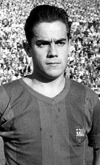

Luis SUAREZ - 1960
- Vainqueur du Ballon d'or 1960, il est souvent considéré comme étant le
meilleur joueur espagnol du xxe siècle
En 1960, c'est
Luis Suarez
, joueur du Barça, qui remporte le Ballon d'Or France Football à l’âge de 25 ans.
Nationalité : Espagnole
Né le 2 mai 1935, à La Corogne (ESP)
Taille : 1,78
Poids : 72 kg
Poste : milieu
Clubs : Accion Catolica Santo Tomas (1945-1948), Hercules CF La Corogne (1948-1949), Perseverancia La Corogne (1949-1951), Deportivo La Corogne (1951-1952), Fabril Deportivo La Corogne (1952), Deportivo La Corogne (1952-1954), FC Barcelone (1954), SE La Espana Industrial (1954-1955), FC Barcelone (1955-1961), Inter Milan (1961-1970) et Sampdoria Gênes (1970-1973)
Palmarès de joueur : Championnat d'Europe des nations 1964 ; Coupe Intercontinentale des clubs 1964 et 1965 ; Coupe des champions 1964 et 1965 ; Coupe des Villes de Foire 1958 et 1960 ; Championnat d'Espagne 1959 et 1960 ; Championnat d'Italie 1963, 1965 et 1966 ; Coupe d'Espagne 1957 et 1959
Bilan en club : 721 matchs, 391 buts
Bilan en équipe nationale : 32 sélections A, 14 buts (1957-1972)
Palmarès Ballon d'Or : vainqueur en 1960 (2e en 1961 et 1964 ; 3e en 1965)
Carrière d'entraîneur : Genoa (équipes de jeunes, 1973-1974), Inter Milan (1974-1975), Cagliari (1975-1976), Spal Ferrare (1976-1977), Côme (1977-1978), Deportivo La Corogne (1978-1979), Espagne (Espoirs, 1980-1988 ; adjoint A, 1982-1988, sélectionneur A, septembre 1988-avril 1991), Inter Milan (1991-1992), Albacete (1994-1995) et Inter Milan (1995-1996)
Palmarès d'entraîneur : Championnat d'Europe des nations Espoirs 1986
Classement du Ballon d’Or France Football 1960 :

Luis Suarez (Espagne / FC Barcelone),
54 pts.
Ferenc Puskas (Hongrie / Real Madrid),
37 pts.
Uwe Seeler (RFA / Hambourg),
33 pts.
Retour à l'accueil
 Luis SUAREZ - 1960
Luis SUAREZ - 1960